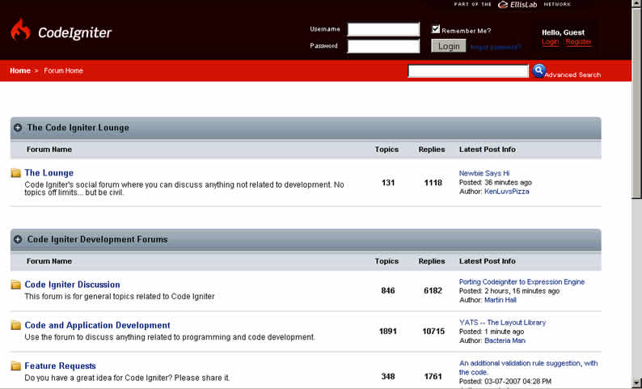
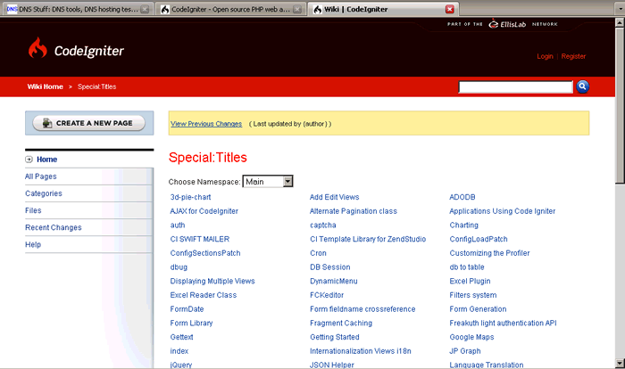
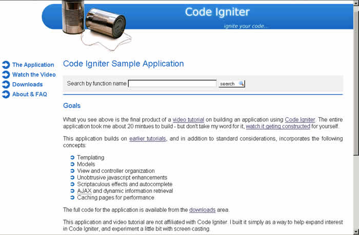
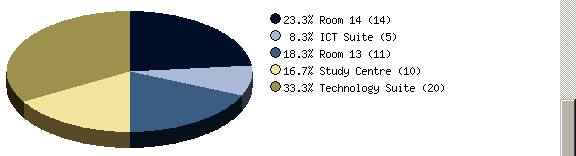
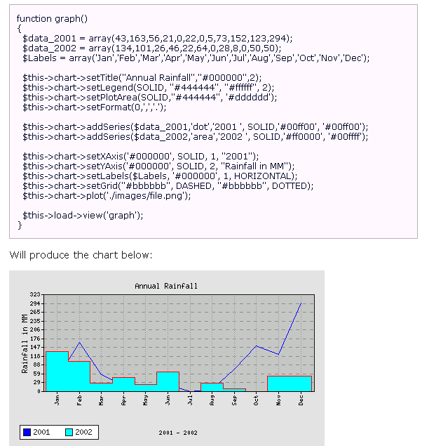
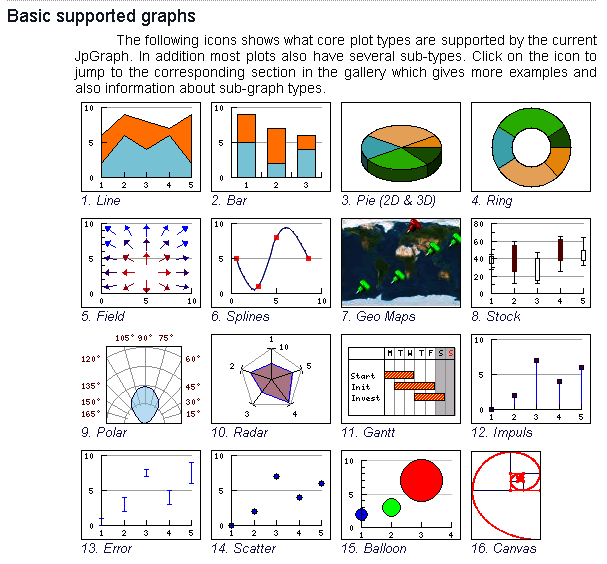

第十五章 资源和扩展
好了，我们已经相当完整的讲解了 CI，并且，我希望能给你留下深刻的印象。在这个过程中，我们自己也编写了一些代码。我敢肯定，当你看过我的一些代码后，你会开始思考：“我可以写这么好...”。每个人都有自己的风格，并且 CI 给你很多的自由。
在 CI 社区里有很多可以写出好代码的人，幸好他们中的许多人正准备利用业余时间做这件事情。所以，有很多代码能为您节省大量的工作。拿一个例子来说，你要创建一个数据取自数据库的动态图形，你可以坐下来好好写自己的代码，但实际上，至少有 3 个人已经解决了这个问题，并且他们都把其代码提供给了你。
最后一章介绍一些你可以借鉴的资源，使你的编码快捷又方便。CI 有一个繁荣和活跃的社区，并且可用的资源一直都在发生变化，所以，我也没有试图制作一个完整的清单，只是让你知道这里有什么，并且到哪里可以看到。
这是一个警告提示，太多的混乱代码很容易让人头晕。一些人写项目的时候，只注重代码的漂亮。大多数人都喜欢写代码，而没有写评论和注释的习惯。正因为这样，很多人就不容易理解一些类库和插件的使用方法。
接下来，让我们看看这本书的最后一章所能给我们提供的帮助吧。
- 首先，让我们看看源代码。
- 然后，让我们看几个主题，并比较可用的代码。
- 最后，让我们看看更普遍的帮助源：在 PHP、MySQL 和 Apache 上。
15.1 CI 的用户论坛
CI 有两个主要的资源：
- 用户论坛的地址是 http://www.codeigniter.com/forums/，这里对大多数 CI 问题进行活跃的、几乎连续不断的讨论。评论和建议并不一定总有用（或准确），但也有一些“资深会员”，他们经常贡献很多智慧。它同样是一个非常友好的论坛；人们问一些非常明显的“菜鸟”问题，也会得到耐心并有价值的回复。有时 Rick Ellis 自己也会被一些东西所吸引，但他并没有去涉及所有领域确实是明智之举。

- Wiki 的地址是 http://www.codeigniter.com/wiki/。这是一个集提示、技巧、Hack、插件和功能强化为一体的知识库，它包含很多有用的代码，尽管涉及的范围还不是很系统化。

论坛和 Wiki 使用起来都很简单：你只需为自己（免费）建立会员账号，然后登陆就可以做自己的事情了。
如果你认真的使用 CI，那么有必要设置你的 RSS 阅读器来订阅 Wiki 的“近期更改” Feed。
然而，请记住：
- 并不是所有的插件编写者像 Rick Ellis 那样技术精湛，他们的作品可能会有一些 BUG 或问题。
- 一些在 CI 1.5 版本出现之前编写的早期插件可能需要修改，因为类库的初始化方式已经改变（见第十二章）。这并不是很难修改，但是也证实了这些类库超出一定范围之后就难以稳定的运行。
15.2 视频教程
如果你想有人手把手的教你完成第一个 CI 应用程序的话，那么，在 CI 的网站上有 3 个优秀的视频教程。
- 对 CI 的介绍。
- 20 分钟建立一个 Blog。Derek Jones 建立了基本的 Blog 页面，向你展示怎样去设置这个网站，编写数据库查询，以及在视图中展示结果。
- 由 Derek Allard 制作的视频（详见 http://video.derekallard.com/），它描述了除其他事项外，如何利用 Scriptaculous 类库去集成 AJAX 和 JavaScript 特效。在下面的图片中，它向你展示如何去构建一个用 Ajax 更新的，有自动完成功能的文本输入下拉框。

15.2.1 可用的插件和类库
Rick Ellis 的目的和希望是：CI 的用户能够把“插件”或类库贡献出来用于帮助其他的 CI 用户。这个框架刚出现大约一年，但已经有了很多有趣的代码。
插件和类库的数量在稳步的增长，已有的插件和类库也在不断的更新。因此下一节并不是一个全面的介绍：只有一部分相关的说明是你觉得有用的。我很抱歉，一直以来我漏掉了很多好资料：请务必亲自查看 Wiki。
15.2.2 AJAX/JavaScript
在 Wiki 里包含了 2 个 AJAX 包：其中一个使用 XAJAX，另外一个使用 prototype.js/scriptaculous.js 类库。
| 名称 | Ajax for CI 1.5.1 |
| URL | http://www.codeigniter.com/wiki/AJAX_for_CodeIgniter/ |
使用 prototype.js 和 scriptaculous.js 类库 |
|
下载包括了 .js 文件和 .php 文件，以及一个完整的用户指南。（如果你没有很好的掌握 AJAX 和 DOM 的话，这是不容易理解的，不过一些例子有助于你理解它。）简单的安装：把 .php 文件放到你的 application/libraries 文件夹下，把 .js 文件放到你的根目录下。因为刚刚正式发布，所以在 CI 的论坛上只有很少的讨论。 |
|
| 作者 | siric |
| 名称 | XAJAX |
| URL | http://www.codeigniter.com/wiki/XAJAX/ |
XAJAX 类库的一个 CI“前端”。包括其自己的 Javascript 文件，xajax.js |
|
| 作者 | Greg McLellan―基于 xajax 的 php 类库（详见 http://www.xajaxproject.org/） |
15.2.3 身份验证
Wiki 上的用户也困于安全问题：这 3 个包用于验证你的用户，并避免保存 Session 数据在 Cookie 中所可能出现的陷阱。
| 名称 | FreakAuth_light |
| URL | http://www.4webby.com/freakauth/ |
它包括一个类库
一个后台管理程序：
它允许你设置 4 个访问级别（从超级管理员到来宾），然后在控制器中设置一个“check”方法。它既能被设置在控制器的构造函数中，也能被设置在某个指定的函数中。如果用户调用控制器（或指定的函数），这段代码将检查他（她）是否登陆。 |
|
在编写这段代码的时候，CI 论坛上正在对其进行广泛的讨论。一些错误已被发现，但是这段代码已发布到第三版了，这些错误看起来已经解决了。 |
|
| 作者 | danfreak |
| 名称 | Auth |
| URL | http://www.codeigniter.com/wiki/auth |
这个包提供了登录/退出功能，带激活的注册，甚至忘记密码功能。它搭建起来非常复杂：你必须建立一个数据库表，引入一些核心的库文件和帮助文件，然后还要作一些配置。 |
|
在 CI 1.5 下运行。 |
|
| 作者 | （匿名/未知） |
| 名称 | DB Session |
| URL | http://www.codeigniter.com/wiki/DB_Session/ http://dready.jexiste.fr/dotclear/index.php?2006/09/13/19-reworked-session-handler-for-code-igniter |
修改 CI 的 Session 类（见第六章），它把 Session 数据存储在 Cookie 里。（当然 Cookie 可加密。）这个类只存储 Session 标识符：你在数据库中添加一个额外的表，它将在那里查找所有的 Session 信息。 |
|
在 CI 1.5 下运行。 |
|
| 作者 | dready |
15.2.4 外部网站
有一些 CI 的“强大用户”，他们贡献他们自己的代码。一个很好的例子是 Glossopteris，它是一个美国网页设计公司经营的网站。他们提供了一些自己的类库，例如（地址是 http://www.glossopteris.com/journal/post/table-relationships-in-ci）另外一个 CRUD 类库，他们声称“将允许指定复杂的表内关系，并完成简单的 CRUD 操作。”它遵循 Rails 的惯例：你可以在表之间定义“一对一”和“一对多”的关系。虽然代码是现成的，但还应该多写一些注释，或者制作一个用户指南。
另外一个网站是 CI_Forge（http://www.ciforge.com/），它是“一个用于项目设计，为了增强和扩展轻量级 PHP 框架 CodeIgniter 的地方。”它提供 Subversion 和 Trac 主机、一个 Wiki 和一个问题跟踪程序并且支持变更记录。这虽然是一个新的应用，但是（在 2007 年 7 月）已经托管了 20 个项目。
15.2.5 比较：使用哪个图表类库？
图表类库可选择的范围很大。有时会有非常多的选择。
为了演示它，让我们看一下做同一件事情的三种选择，并看看他们有什么不同。自己制作动态数据图表不是一件简单的事情，但它确实使你的网站变漂亮了。
让我们来看 3 个 CI 的插件，然后像看他们生成的结果一样尝试去比较他们的强项和弱点。
| 名称 | 3d-pie-chart |
| URL | http://codeigniter.com/wiki/3d-pie-chart/ |
由两个数组（标签和值）生成一个饼图，然后把它保存在你的网站上。看起来很棒，但这是它所能做的一切。  |
|
简单设置：把 piechart.zip 文件放在你的 application/libraries 文件夹中，然后写一个基于例子的控制器。需要一个字体文件，然后你需要修改一个视图来显示结果。在 CI 1.5 版本下运行。 |
|
| 作者 | Craig |
| 名称 | Panaci |
| URL | http://bleakview.orgfree.com/ 或 http://codeigniter.com/wiki/Charting/ |
动态生成图表和图形，包括：条，线，区域，阶梯，以及脉冲图（而不是饼图）。在其 Wiki 页面中声明：“请注意，这不是一个像 jpgraph 或 chartdirector 的商业级类库，但是它足够能胜任基本的绘图需要”。下面的代码示例和样本图展示了它的样子，以及怎样去使用它。  |
|
在 CI 1.5 版本下运行。和 3d-pie-chart 一样，你复制文件到你的 application/libraries 文件夹中，然后从控制器中调用它（提供基本的参数和一个数组数据）。 在 CI 论坛上的讨论很简短，所以，在编写本书时没有发现大的错误。 |
|
| 作者 | Oscar Bajner |
| 名称 | JP Graph |
| URL | http://codeigniter.com/wiki/JP_Graph/ |
严格的讲，这不是一个插件：它是一段在 CI 和外部 JP Graph 类库之间提供接口的代码。你需要下载 JP Graph 类库，为每个你需要使用的图形类型建立一系列插件，然后当你需要他们时再从控制器中调用。 正如其网站上的这些例子图表：http://www.aditus.nu/jpgraph/features.php 所显示的，JP Graph 提供了范围更加广阔的图表，并且他们看起来很不错。  |
|
JP Graph 有两个缺点。正如其 Wiki 页面中所说：“请记住 JpGraph 有一个非常庞大的代码库，所以请确保为每个图表只引入你需要的类库。”其次，JP Graph 对个人使用是免费的，但是商业使用并不免费。 |
|
| 作者 | Aditus Consulting |
关于这三个选择：前两个相对简单，第三个复杂一些。这个取决于你的需求（如果你准备购买的话）。
15.2.6 CRUD：新领域
几乎在所有的应用程序中你都要用到 CRUD。它能简单、逻辑化的自动完成页面的生成。它们是最最基础的，虽然它们存在有千百万种的形式。如果不按你的方式制订规则并让用户来遵守，要写出一个应用程序几乎是不可能的。因此，你需要在考虑尽可能多的可能性方面和在简化使用方面做出权衡。你考虑到的特例情况和可能性越多，代码就会变得越复杂，需要下载的也会越多。
所以，很多人已经开始尝试使 CRUD 的基本操作更简洁。
在第十三章中，我们已经尝试开发了我们自己的 CRUD 应用程序。这是一个相当简单的模型，它截掉了很多细枝末节，仅仅允许你使用 HTML 表单对象的部分功能；但它确实拥有验证功能。
在本章中，我们已经提到了 Glossopteris 类库。
另外一个有趣的实现是“CodeCrafter”，它被列在 CI 的 Wiki 上面，同时也发表在南非的 Datacraft 软件咨询网站上（http://www.datacraft.co.za/index.php?contents=codecrafter/codecraft）。该网站声称：“CodeCrafter 将会帮助你在仅仅几秒钟内生成你的全部 CodeIgniter 应用程序。”它有一个 26 页的在线手册，该手册向你展示了如何使用它的接口去生成 CI 代码。与大多数其他方法不同的评论如下：它使用图形化的界面为你构建 CI 代码，而不是提供供你调用的类库或代码。
SuperModel (详见 http://codeigniter.com/wiki/SuperModel/) 就是：“SuperModel 类库是模型的一个扩展，使一般的表单生成和验证工作自动化。想一下脚手架（scaffolding）吧。”
在 SuperModel 作者的一篇评论中阐述了编写这类代码所面临的困难以及用户所承担的风险。他说：“请注意这个类库是一个正在开发的产品。我目前正在做很多修改，包括对 API 的修改，这些修改将不兼容于旧的程序。在我写此文（2006年5月30日）的同时，我正在努力实现一对多和多对多的关联查询。不幸的是，这个类库迫使你以某种方式来工作。我试图让它尽可能的小巧灵活，但是同时，在小巧灵活和复杂臃肿之间必须找到一个平衡点，以上就是其作为一个外部第三方类库出现的原因―你可以自由的编写你需要的模型，或者使用其他类似功能的第三方类库。”
15.2.7 其它编程资源，例如 Xampplite、MySQL 和 PHP
有许多对 PHP 有用的资源。来让我们略微涉及一下他们。
1.PHP 可以从 www.php.net 上免费下载，也包括了完整的手册。
2.廉价的 PHP 编辑器可以从 MP Software http://www.mpsoftware.dk/ 那里购买。
有许多关于 PHP 的好书，包括《PHP Programming with PEAR》，作者是 Carsten Lucke、Aaron Wormus、Stoyan Stefanov 和 Stephan Schmidt，出版社是 Packt。
在你自己的机器上运行本地 Web 服务器，尝试看一下 http://www.apachefriends.org/en/index.html―一个免费提供 XAMPP 包下载的站点。它将安装一个 Apache Web 服务器、MySQL、PHP 和 Perl。如果 XAMPP 包对你来说太全面，请尝试这个站点上的 Minixampp，本书的代码就是在这个环境下编写的。
MySQL 同样拥有自己的网页― http://www.mysql.com/ ―不过，如果你想免费下载最新版本，请到 http://dev.mysql.com/。（请记住虽然很多 ISP 都没有使用最新的版本。虽然 MySQL 的最新版本是 5，但是大多数 ISP 仍旧使用版本 4。这阻止了你使用某些更有趣的新特性，例如存储过程。）更多内容请参考《Creating your MySQL Database: Practical Design Tips and Techniques》, 作者是 Marc Delisle，出版社是 Packt。
虽然 MySQL 有它自己的工具，但是最流行（也是最常见的）的工具是 PHPMyAdmin。（更多内容请参考《Mastering phpMyAdmin 2.8 for Effective MySQL Management》，作者也是 Marc Delisle，出版社是 Packt。）
15.3 总结
在本章中，我们为你展示了一些当你开始用 CI 编程时要用到的资源。有很多现成的代码可以使用，你需要在使用之前好好的看看它们：不要一看到满足你需要的插件或类库就直接开始使用。你需要好好的研究这些代码，看看他们是如何工作的，这对你整体把握代码很有帮助，并且有利于你更好的理解它。不管怎样，只要你决定使用 CI 框架，你就能找到各种不同层次和复杂程度的类库，它们将完成很多要由你手工完成的任务。
我们详细介绍了这些类库：
- AJAX 和 JavaScript
- 身份验证
- 图表
- CRUD
最后，我们介绍了一些关于 PHP、MySQL 和运行一个本地 Web 服务器所需要的资源。